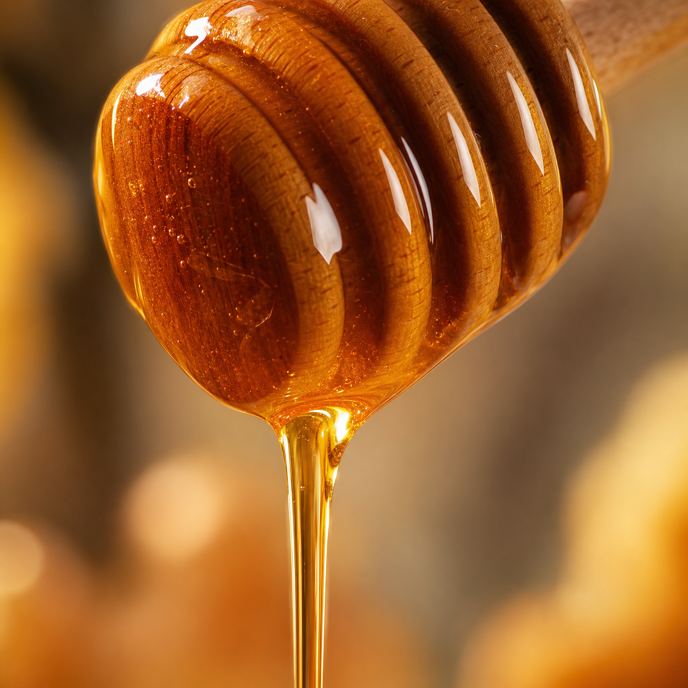

V posledních měsících se v odborných kruzích stále častěji skloňuje termín, který byl po desetiletí zapomenut. Jde o specifický přírodní proces, který dokáže harmonizovat vnitřní prostředí těla a podpořit mentální jasnost, kterou obvykle spojujeme s mnohem mladším věkem.
Tento mechanismus, často nazývaný "tekuté zlato", není založen na žádné nové chemické sloučenině. Naopak, využívá čistou sílu přírody v její nejčistší formě. Klíčem je způsob, jakým určité přírodní složky interagují s naším systémem a pomáhají mu regenerovat se zevnitř.
Mnoho seniorů v České republice již hlásí neuvěřitelné změny ve své každodenní energii. Bez nutnosti drastických změn životního stylu, pouze díky pochopení tohoto jednoduchého rituálu, který zabere jen pár minut denně.
Zjistit více o tomto mechanismuVědecká komunita nyní zkoumá, proč tento tradiční přístup vykazuje tak stabilní výsledky. Zdá se, že tajemství tkví v čistotě a synergii složek, které byly po staletí součástí naší kultury, ale v moderní době byly odsunuty na vedlejší kolej.

Pokud hledáte způsob, jak podpořit svou bystrost a cítit se opět plní života, toto krátké vysvětlující video vám ukáže cestu. Je to návrat k tradici podložený moderním pozorováním.
Sledovat video prezentaci zdarma